By the end of this workshop, attendees should be able to:
Interact with data in R more confidently
Create plots using ggplot2
Data Visualization
Plots and other forms of data visualization are powerful tools for conveying complex relationships. While tables can be useful, data visualizations are often preferred to aid with identify patterns and relationships and emphasizing important findings in a research projects. This is especially true for presentations, where the audience may not have time to digest a large table of numbers. Jenny Bryan’s Challenger Example is a great example of why we may want to visualize data.
So, what makes a visualization good, or even great?
“A good visualization will clearly answer your question without distraction; a great visualization will suggest even what the question was itself without additional explanation.” - A First Introduction to Data Science
We can accomplish this by making our data visualizations SASS-y:
Simple (plot is as simple as possible, minimizing distractions)
Accessible (colourblind-friendly pallettes are used, text is human-readable)
Specific (the purpose of the plot is clear, and explores a specific research question)
Scaled (small differences are not blown up, proportionality is maintained)
This plot violates multiple components of SASS. The plot is not scaled properly (visually, the bar representing 6 deaths by sharks is almost half the size of the bar representing 750,000 deaths by mosquitoes). There are also a lot of “filler” graphics, making the bar chart distracting.
We could (using the numbers based off previous image which is… questionably sourced) update this graphic to be more refined with the following:
Notice how small differences are truly small, and axis labels are clear. The plot also has minimal distractions. You can really see how the human and mosquito causes of death dominate the graph.
Choosing a Data Visualization
Typically a data visualization is two-Dimensional (think of drawing a plot on a piece of paper). We can easily visualize the relationship between two variables. Below are some commonly used data visualizations, but this list is not exhaustive.
What plot should I use?
Scatterplots: used to visualize two quantitative (numeric) variables
Line plots: used to visualize trends with respect to an independent quantity (like time)
Bar plots: used to visualize the comparison of amounts (categorical variables). Can be stacked or grouped to show the relationships across another categorical variable.
Box plot or histograms: used to visualize distributions, perhaps across groups.
Notice what’s not on this list: the pie chart. Humans are very bad at estimating the areas of the “slices” of pie, so this type of visualization is not preferred. Bar plots are a more accessible alternative.
Plotting in R with ggplot2
If you’ve learned about data visualization in R before, you’ve likely produced plots using “base R” methods (for example, the boxplot() function in R. It is a simple framework for making plots and is often “enough” for producing basic plots. In this lecture, we are going to dive into ggplot2, a package R users often use to make more sophisticated plots! If you’ve never used R to plot before, don’t worry. We aren’t assuming you have any experience with either method of plotting in R.
There are three key aspects of plots in ggplot2:
aesthetic mappings: relates dataframe columns to visual properties
geometric objects: disctates how to display those visual properties (type of plot, for example)
scales: transforms variables, sets limits
We add these layers one by one using +
NoteImportant Note
Building plots is an iterative procedure. Try things, make mistakes, and refine!
Demo
The Penguins Data Set
We will explore the penguins data set from the palmerpenguins package in R. This data set is openly available from the palmerpenguins package, which will need to be installed and then loaded. We will also use ggplot2 and forcats later for plotting.
# install the required package (first time only)# install.packages(c("palmerpenguins", "ggplot2", "forcats")) #uncomment if needed!# load in the required package to get access to the penguins datasetlibrary(palmerpenguins)library(ggplot2)library(forcats)# look at the first few rows of the data with head()head(penguins)
# A tibble: 6 × 8
species island bill_length_mm bill_depth_mm flipper_length_mm body_mass_g
<fct> <fct> <dbl> <dbl> <int> <int>
1 Adelie Torgersen 39.1 18.7 181 3750
2 Adelie Torgersen 39.5 17.4 186 3800
3 Adelie Torgersen 40.3 18 195 3250
4 Adelie Torgersen NA NA NA NA
5 Adelie Torgersen 36.7 19.3 193 3450
6 Adelie Torgersen 39.3 20.6 190 3650
# ℹ 2 more variables: sex <fct>, year <int>
Research Questions
An interesting research question may be how some of these measurements within a penguin are related. Let’s investigate the following:
Descriptive Visualizations
What species of penguins are in my data set? How many of each sex?
What does the distribution of bill length measurements look like?
Exploratory Visualizations
Do penguins with longer bills also tend to have wider bills?
Do certain species of penguin tend to have larger bills?
Descriptive Data Visualization for Counting Penguin Species
Let’s visualize the types of penguins (species and sex) in our study.
If we wanted to show the counts of each penguin species, we can use a bar plot! We can plot this using geom_bar() in ggplot.
Let’s build this iteratively and start with a basic bar plot. We will call the ggplot() function where the first argument is the data set we want to plot with (here, it’s penguins). Then, we use the aes() function in the second argument to define what goes on what axis. Here, we only need to specify that species will go on the x axis.
ggplot(penguins, aes(x = species))
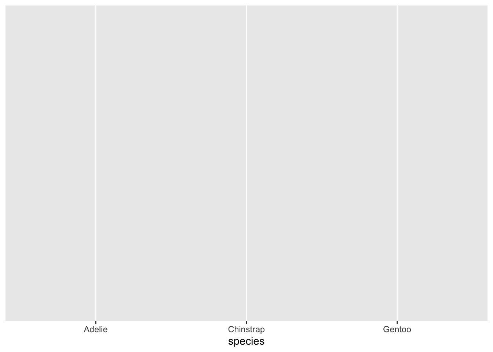
Nothing has really been plotted yet, because we haven’t told ggplot what to draw! Let’s add a layer to our plot that tells ggplot to create a bar plot with geom_bar
ggplot(penguins, aes(x = species)) +geom_bar()
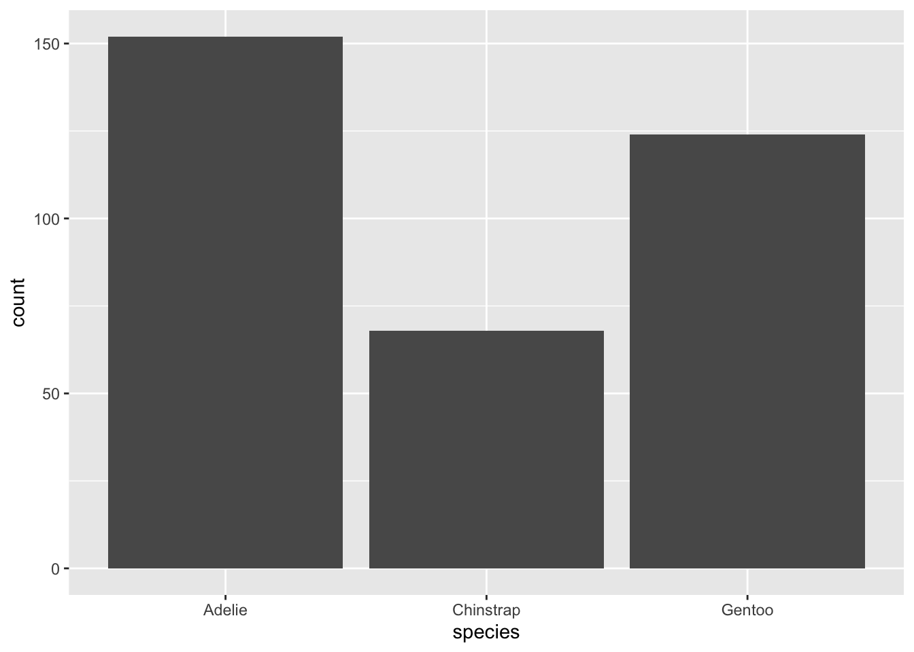
Now we have a very basic bar plot! There are a few improvements we can make. Perhaps we want to use colour to elevate the plot (thought not necessary for interpretation, this can be a nice addition). Within the aes() function, we will add fill = species to tell ggplot to fill in the bar colours by species.
ggplot(penguins, aes(x = species, fill = species)) +geom_bar()
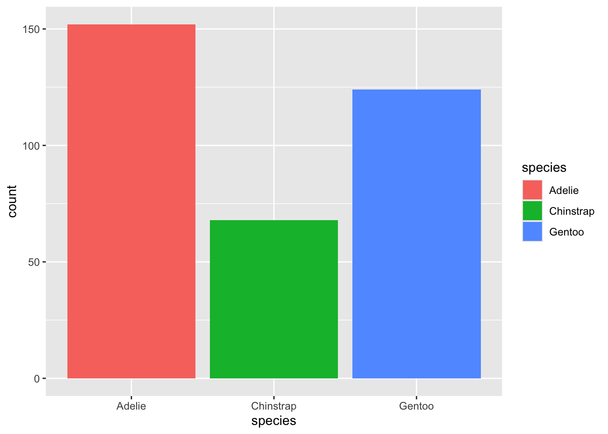
Next, let’s rearrange the bars from lowest to highest. This is particularly useful when the number of bars is large and it may be difficult to distinguish between the heights. We will apply the fct_infreq() function from the forcats package to rearrange them.
ggplot(penguins, aes(x =fct_infreq(species), fill = species)) +geom_bar()
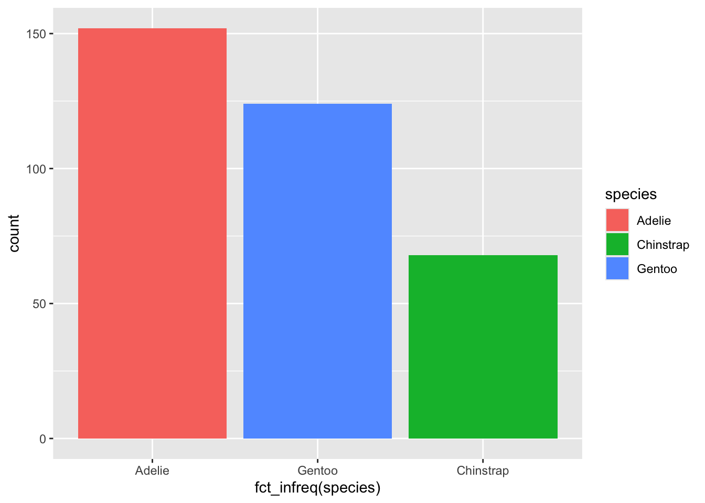
Now, our axis labels are a bit ugly. We can update the names using the xlab() and ylab() layers! We can add a title with ggtitle() as well while we’re at it:
ggplot(penguins, aes(x =fct_infreq(species), fill = species)) +geom_bar() +ylab("Number of Penguins") +xlab("Species") +ggtitle("Number of Penguins by Species")
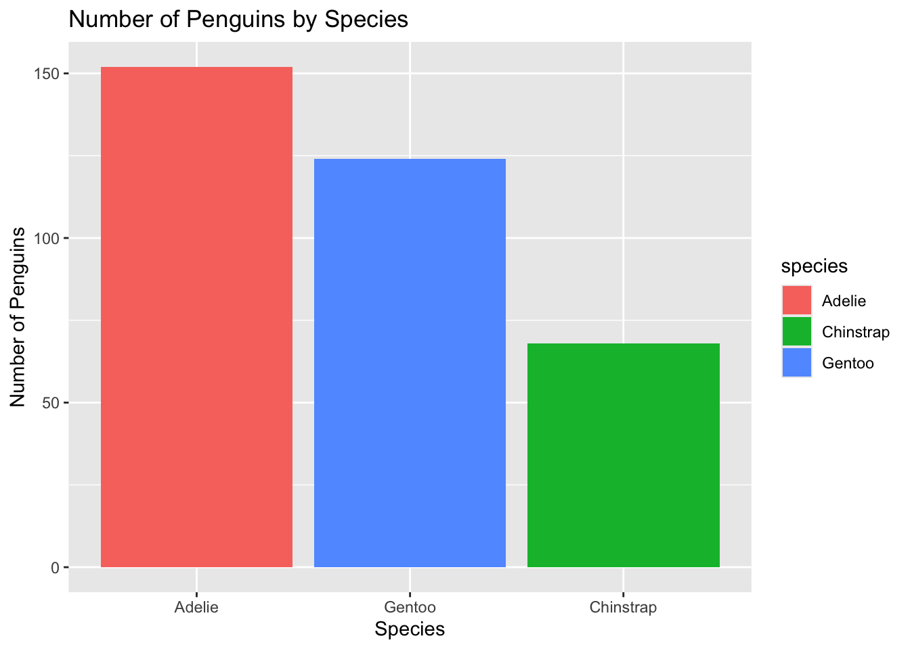
It’s often useful to “flip” the axis so that the bars are horizontal. It helps humans to better judge the relative sizes visually. We can do this by adding the coord_flip() layer:
ggplot(penguins, aes(x =fct_infreq(species), fill = species)) +geom_bar() +ylab("Number of Penguins") +xlab("Species") +ggtitle("Number of Penguins by Species") +coord_flip()
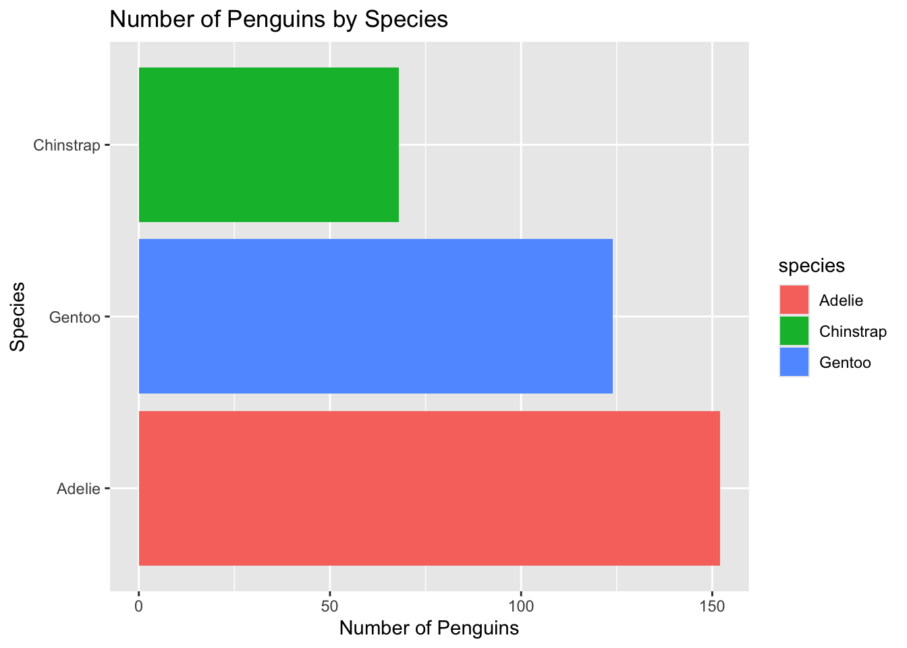
The last thing I’ll do here is add the counts of each bar directly to the visualization. We can do this with geom_text():
ggplot(penguins, aes(x =fct_infreq(species), fill = species)) +geom_bar() +ylab("Number of Penguins") +xlab("Species") +ggtitle("Number of Penguins by Species") +coord_flip() +geom_text(stat ="count", aes(label =after_stat(count)), position =position_dodge(width =0.9, preserve ="single"),hjust =-0.01)
As the text gets cut off a little bit, I’ll also increase the “limits” (range) of the axis for counts. Remember: we flipped our axis so this is technically the y-axis!
ggplot(penguins, aes(x =fct_infreq(species), fill = species)) +geom_bar() +ylab("Number of Penguins") +xlab("Species") +ggtitle("Number of Penguins by Species") +coord_flip() +geom_text(stat ="count", aes(label =after_stat(count)), position =position_dodge(width =0.9, preserve ="single"),hjust =-0.1) +# moves text slightly right ylim(0, 155)
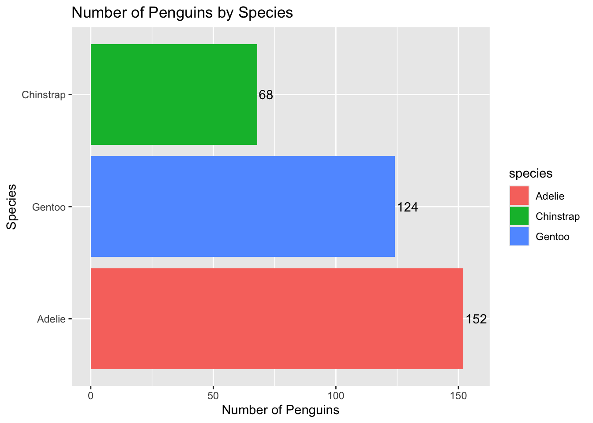
Descriptive Data Visualization for Counting Penguin Species by Sex
Let’s get the counts by sex, too! First, we need to change fill from species to sex. I’ll also remove the text for now.
ggplot(penguins, aes(x =fct_infreq(species), fill = sex)) +geom_bar() +ylab("Number of Penguins") +xlab("Species") +ggtitle("Number of Penguins by Species") +coord_flip() +ylim(0, 155)
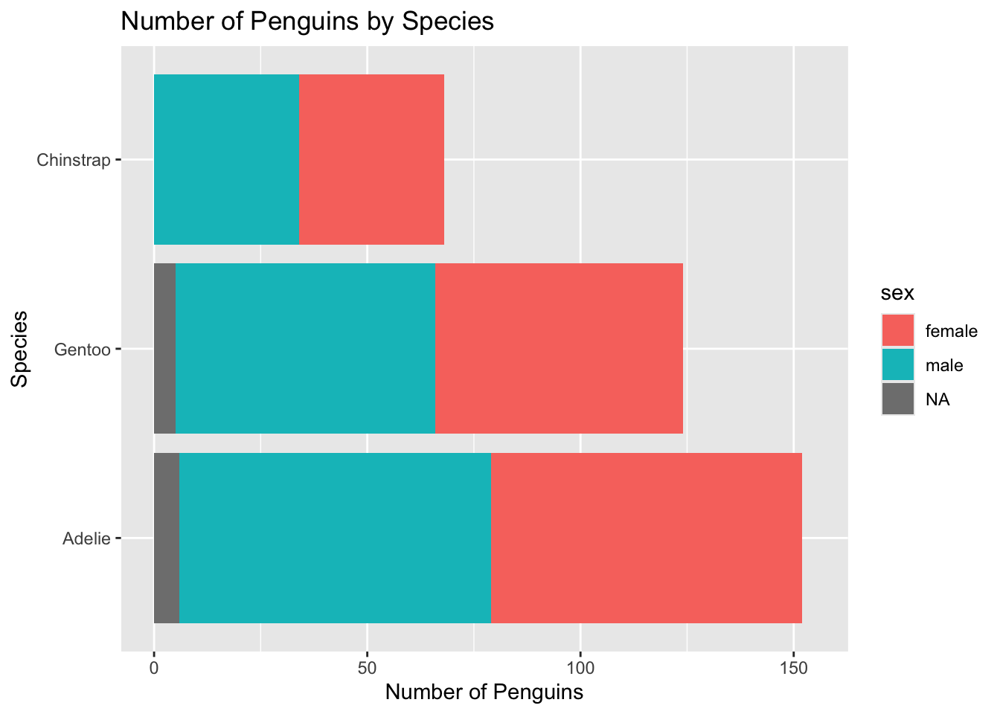
Not bad, but it may be useful to have the sexes side by side. We can do this by including a position = "dodge" call in geom_bar():
ggplot(penguins, aes(x =fct_infreq(species), fill = sex)) +geom_bar(position ="dodge") +ylab("Number of Penguins") +xlab("Species") +ggtitle("Number of Penguins by Species") +coord_flip() #removed ylim
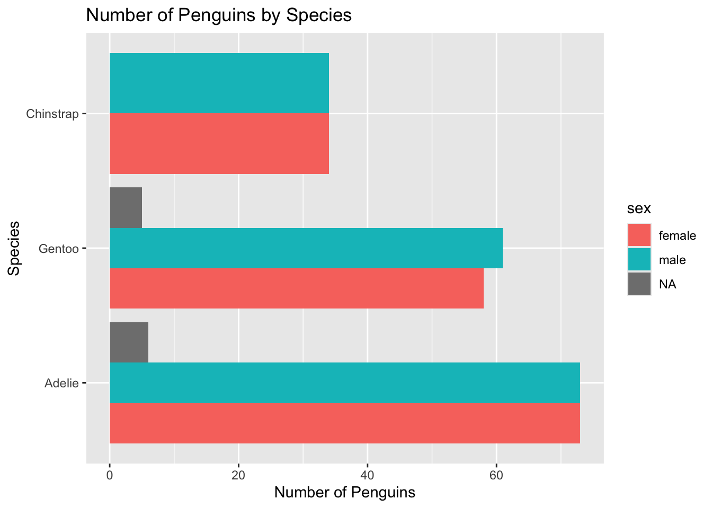
Because there are no NA (missing) values in the Chinstrap penguins, ggplot makes the bars wider. I personally don’t like this so we will change position = "dodge" to position = position_dodge(preserve = "single").
ggplot(penguins, aes(x =fct_infreq(species), fill = sex)) +geom_bar(position =position_dodge(preserve ="single")) +ylab("Number of Penguins") +xlab("Species") +ggtitle("Number of Penguins by Species") +coord_flip()
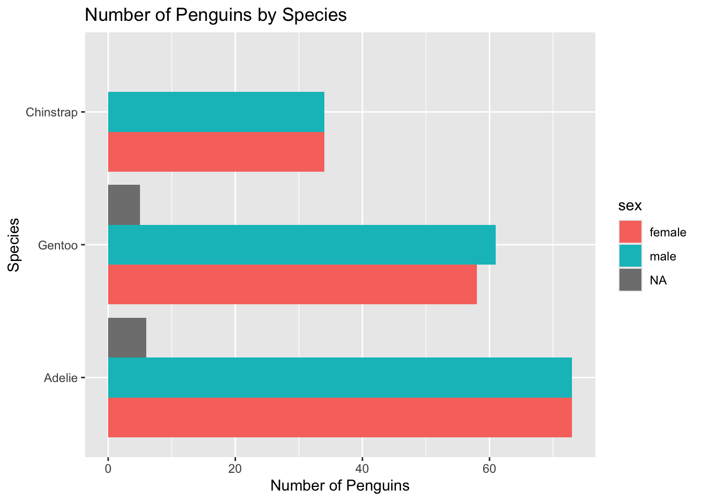
We can then add the text back in, but we’ll also need to add position = position_dodge(preserve = "single") to geom_text():
ggplot(penguins, aes(x =fct_infreq(species), fill = sex)) +geom_bar(position =position_dodge(preserve ="single")) +ylab("Number of Penguins") +xlab("Species") +ggtitle("Number of Penguins by Species") +geom_text(stat ="count", aes(label =after_stat(count)), position =position_dodge(width =0.9, preserve ="single"),hjust =-0.1) +coord_flip()
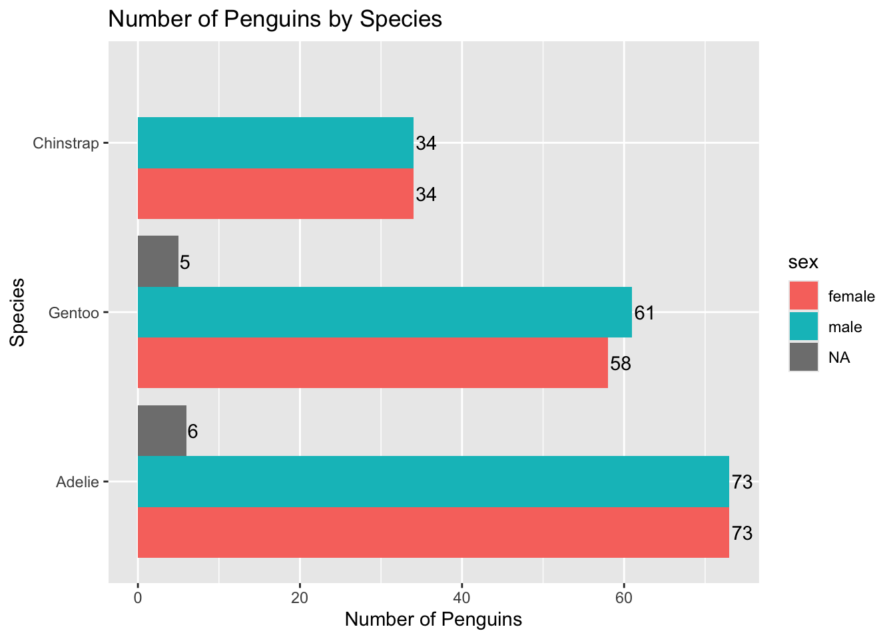
Descriptive Data Visualization for Bill Lengths
Let’s describe the distribution of the bill lengths (bill_length_mm) in our data set using a histogram (geom_histogram)!
We can add a title, and axis labels using individual xlab(), ylab(), ggtitle() functions OR all in one using labs():
ggplot(penguins, aes(x = bill_length_mm)) +geom_histogram() +labs(title ="Distribution of Penguin Bill Lengths",x ="Bill Length (mm)",y ="Frequency" )
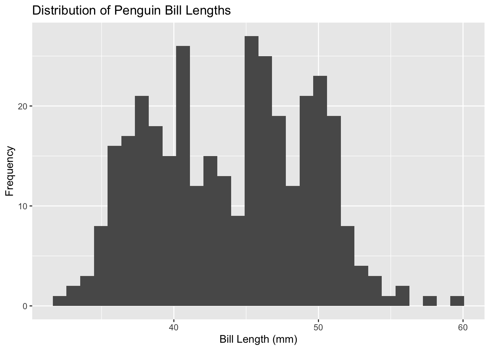
If you really want to see the boxes individually, you can also manipulate the inner colour (fill), and outline (color):
ggplot(penguins, aes(x = bill_length_mm)) +geom_histogram(fill ="steelblue", color ="white") +labs(title ="Distribution of Penguin Bill Lengths",x ="Bill Length (mm)",y ="Frequency" )
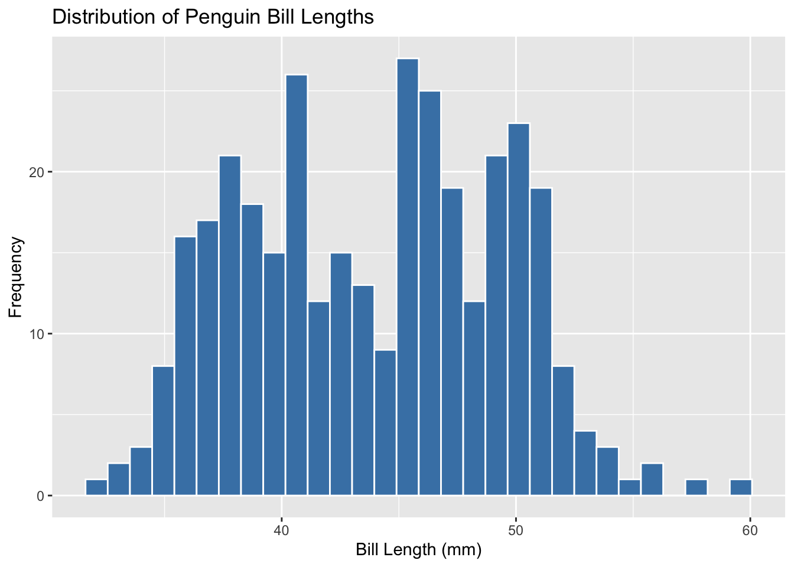
You can also manipulate the bin width (larger = thicker bars) to determine how you want to visualize the histogram:
ggplot(penguins, aes(x = bill_length_mm)) +geom_histogram(binwidth =2, fill ="steelblue", color ="white") +labs(title ="Distribution of Penguin Bill Lengths",x ="Bill Length (mm)",y ="Frequency" )
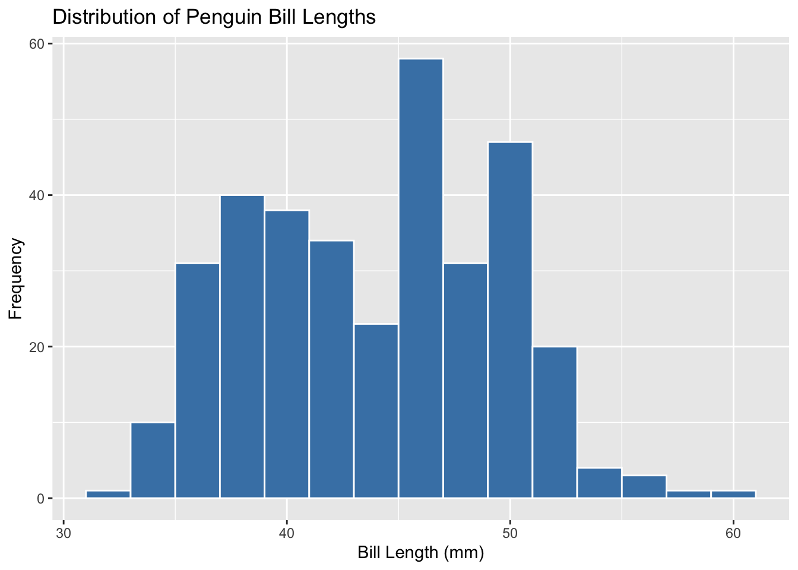
Exploratory Data Visualization: Relationship between Bill Depth and Width
Let’s visualize bill depth and bill width, which are measured in millimetres, using a scatterplot! We can do this using the geom_point() object within ggplot. We will assign bill_length_mm to the x axis, and bill_depth_mm to the y axis (these choices are slightly arbitrary).
# Create a basic scatterplot using ggplotggplot(penguins, aes(x = bill_length_mm, y = bill_depth_mm)) +geom_point()
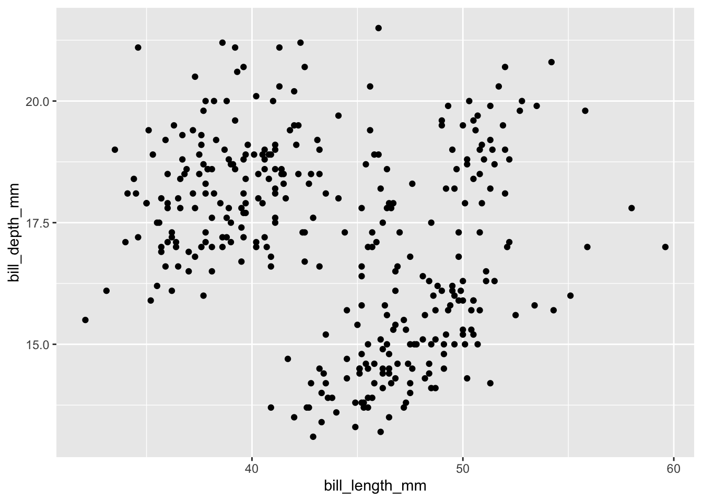
This is a fine, basic scatterplot. With some overlapping points, it may be useful to reduce the opacity of the points to really visualize the overlap. We can do this with alpha (lower values = more transluscent).
# Create a basic scatterplot using ggplotggplot(penguins, aes(x = bill_length_mm, y = bill_depth_mm)) +geom_point(alpha =0.8) #make points transluscent.
Then, we can clean up the axis labels and titles.
ggplot(penguins, aes(x = bill_length_mm, y = bill_depth_mm)) +geom_point(alpha =0.8) +xlab("Bill Length (mm)") +# update the x axis label nameylab("Bill Depth (mm)") +# update the y axis label nameggtitle("Relationship between penguin bill lengths and depths") # add a title
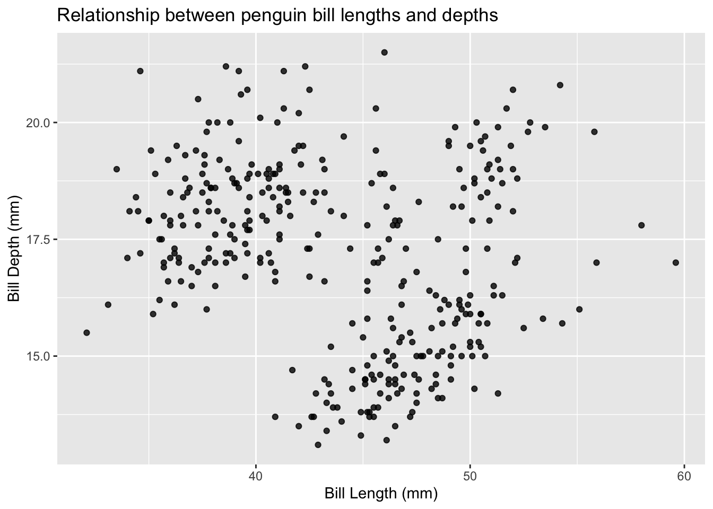
Exploratory Data Visualization: Relationship between Bill Depth and Width by Species
What about looking at this relationship between species? Do certain species of penguin tend to have larger bills? We can group by colour/shape to see if there are trends within/between penguin species!
Let’s start by grouping species by colour in the aes() function call:
ggplot(penguins, aes(x = bill_length_mm, y = bill_depth_mm, colour = species)) +geom_point(alpha =0.8) +xlab("Bill Length (mm)") +ylab("Bill Depth (mm)") +ggtitle("Relationship between penguin bill lengths and depths")
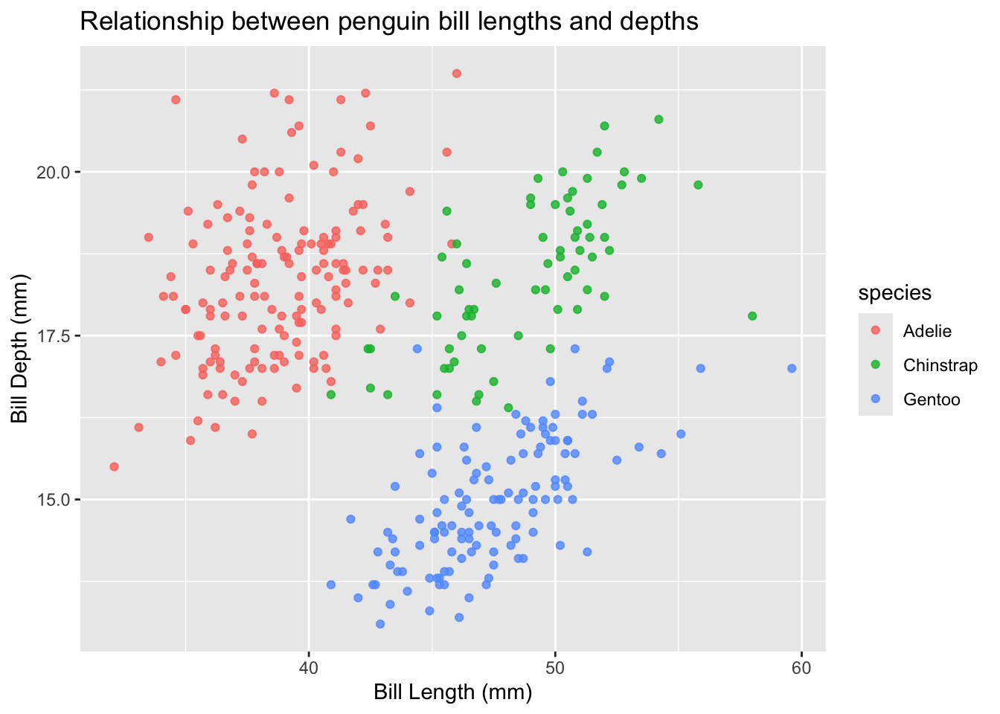
While for some of us this visualization will suffice, this is not an accessible way to show groupings. It is good practice to not rely solely on colour to distinguish between groups. As such, let’s change the point shapes by group, too! We do this by adding shape = species to the aes() function:
ggplot(penguins, aes(x = bill_length_mm, y = bill_depth_mm, colour = species, shape = species)) +geom_point(alpha =0.8) +xlab("Bill Length (mm)") +ylab("Bill Depth (mm)") +ggtitle("Relationship between penguin bill lengths and depths")
Now, we can clean up the legend title to be capitalized (or even renamed)
ggplot(penguins, aes(x = bill_length_mm, y = bill_depth_mm, colour = species, shape = species)) +geom_point(alpha =0.8) +xlab("Bill Length (mm)") +ylab("Bill Depth (mm)") +ggtitle("Relationship between penguin bill lengths and depths") +labs(color ="Species", shape ="Species") #update the title of the legend
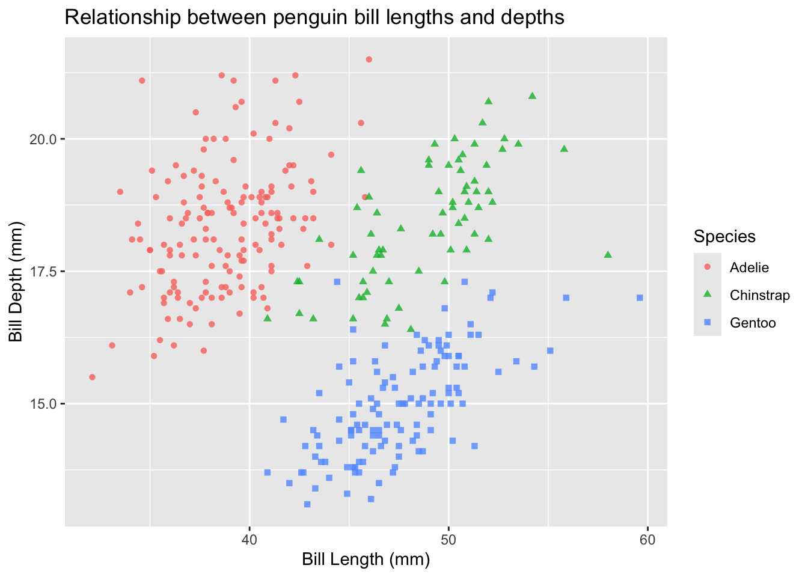
Try it yourself:
Create a visualization that explored the following research question: Are body mass and flipper lengths in penguins related? Does this vary by sex?
NoteSolution
ggplot(penguins, aes(x = flipper_length_mm, y = body_mass_g, col = sex)) +geom_point() +xlab("Flipper Length (mm)") +# update the x axis label nameylab("Body Mass (g)") +# update the y axis label nameggtitle("Relationship between penguin flipper length and body mass") +# update the title of the legendlabs(color ="Sex", shape ="Sex")